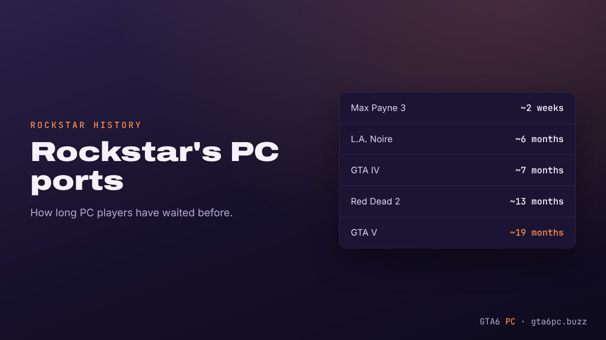

Every Rockstar PC port, and what it says about GTA 6
Rockstar almost always releases on consoles first. Looking back at its PC ports shows how long PC players usually wait, and what tends to go right and wrong at launch.

The timeline
| Game | Console | PC | Wait |
|---|---|---|---|
| GTA IV | April 2008 | December 2008 | ~7 months |
| L.A. Noire | May 2011 | November 2011 | ~6 months |
| Max Payne 3 | May 2012 | Late May / June 2012 | ~2 weeks |
| GTA V | September 2013 | April 2015 | ~19 months |
| Red Dead Redemption 2 | October 2018 | November 2019 | ~13 months |
| Red Dead Redemption | May 2010 | October 2024 | ~14 years |
| GTA 6 | November 2026 | Not announced | Q1 2027 reported |
GTA IV: the rough one
GTA IV's PC version was notorious for poor performance at launch and for relying on Games for Windows Live. It's still remembered as a warning about rushed ports.
GTA V: late, but worth it
GTA V took the longest of Rockstar's GTA ports, but it arrived as the best version of the game: higher frame rates, 4K support and the Rockstar Editor for making videos, which debuted on PC. It went on to sell for over a decade, helped by mods and roleplay.
Red Dead Redemption 2: great game, bumpy launch
RDR2 on PC looked fantastic and added plenty of settings, but its first days were hit by crashes and launcher problems. Rockstar patched most of it within weeks.
What this means for GTA 6
- The wait: a Q1 2027 release would be one of Rockstar's quickest big PC ports, matching the reported plans.
- The launch: expect a strong PC version with plenty of extras, and be ready for some early bugs.
- The long run: if GTA 6 follows GTA V, PC will be where the game lives longest, thanks to mods and roleplay.
More on what to expect in our GTA 6 PC launch guide.
Last updated . We update this page when Rockstar announces anything new.